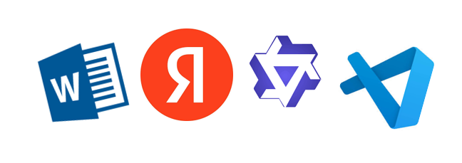

Введение
Методические указания предназначены для студентов ДВФУ и знакомят с современными инструментами обработки учебных материалов с помощью нейросетей.
Общее описание
Методические указания предназначены для студентов ДВФУ и знакомят с современными инструментами обработки учебных материалов с помощью нейросетей.
В пособии рассматриваются ключевые цифровые решения, которые могут использоваться в учебной деятельности для подготовки, анализа, оформления и структурирования учебных материалов.
Рассматриваются три ключевые темы:
- Автоматизация оформления документов в Word через макросы.
- Работа с сервисом «Яндекс Проекты» и ИИ-ассистентом QWEN.
- Использование Visual Studio Code для организации, анализа и генерации учебных файлов (включая HTML-презентации, работу с таблицами и подготовку к экзаменам).
Цель пособия — дать практические инструкции для эффективного применения искусственного интеллекта в учебной деятельности.
Пособие содержит примеры кода, скриншоты, рекомендации по составлению запросов и разбор типичных проблем, которые могут возникнуть в процессе работы.
